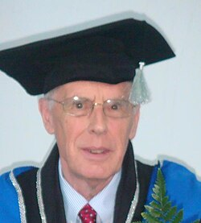

John Edward Hopcroft | |
|---|---|
 Hopcroft in 2006 at ITMO University | |
| Born | October 7, 1939 Seattle, Washington, U.S. |
| Education | Seattle University (BS) Stanford University (MS, PhD) |
| Awards |
|
| Scientific career | |
| Fields | Computer science |
| Institutions | |
| Thesis | Synthesis of Threshold Logic Networks (1964) |
| Richard Mattson | |
Doctoral students | |
| Website | cs |
John Edward Hopcroft (born October 7, 1939) is an American theoretical computer scientist. His textbooks on theory of computation (also known as the Cinderella book) and data structures are regarded as standards in their fields. He is a professor emeritus at Cornell University,[1][2] co-director of the Center on Frontiers of Computing Studies at Peking University,[3] the director of the John Hopcroft Center for Computer Science at Shanghai Jiao Tong University[4] and Hopcroft Center on Computer Science at Huazhong University of Science and Technology.[5] He and Robert Tarjan won the 1986 ACM Turing Award.
Hopcroft received a Bachelor of Science with a major in electrical engineering from Seattle University in 1961. He received a Master of Science in electrical engineering in 1962 and a Doctor of Philosophy in electrical engineering in 1964, both from Stanford University.[6]
Hopcroft is the grandson of Jacob Nist, who established the Seattle-Tacoma Box Company in 1889.[7]
Hopcroft worked for three years at Princeton University and since then has been at Cornell University.
In addition to his research work, he is well known for his books on algorithms and formal languages coauthored with Jeffrey Ullman and Alfred Aho, regarded as classic texts in the field.
In 1986 Hopcroft received the ACM Turing Award (jointly with Robert Tarjan) "for fundamental achievements in the design and analysis of algorithms and data structures." Along with his work with Tarjan on planar graphs he is also known for the Hopcroft–Karp algorithm for finding matchings in bipartite graphs. In 1994 he was inducted as a Fellow of the Association for Computing Machinery. In 2005 he received the Harry H. Goode Memorial Award "for fundamental contributions to the study of algorithms and their applications in information processing."[8]
In 2008 Hopcroft received the Karl V. Karlstrom Outstanding Educator Award "for his vision of and impact on computer science, including co-authoring field-defining texts on theory and algorithms, which continue to influence students 40 years later, advising PhD students who themselves are now contributing greatly to computer science, and providing influential leadership in computer science research and education at the national and international level."[9]
Hopcroft was elected a member of the National Academy of Engineering in 1989 for fundamental contributions to computer algorithms and for authorship of outstanding computer science textbooks.
In 1992, Hopcroft was nominated to the National Science Board by George H. W. Bush.
In 2005, Hopcroft was awarded an honorary doctorate by the University of Sydney in Sydney, Australia. In 2009, he received an honorary doctorate from Saint Petersburg State University of Information Technologies, Mechanics and Optics.[10] In 2017, Shanghai Jiao Tong University launched a John Hopcroft Center for Computer Science.[11] In 2020, the Chinese University of Hong Kong, Shenzhen opened a Hopcroft Institute for Advanced Information Sciences and designated him as an Einstein professor.[12]
Hopcroft is also the co-recipient (with Jeffrey Ullman) of the 2010 IEEE John von Neumann Medal for "laying the foundations for the fields of automata and language theory and many seminal contributions to theoretical computer science."[13]
.jpg){kind=link}